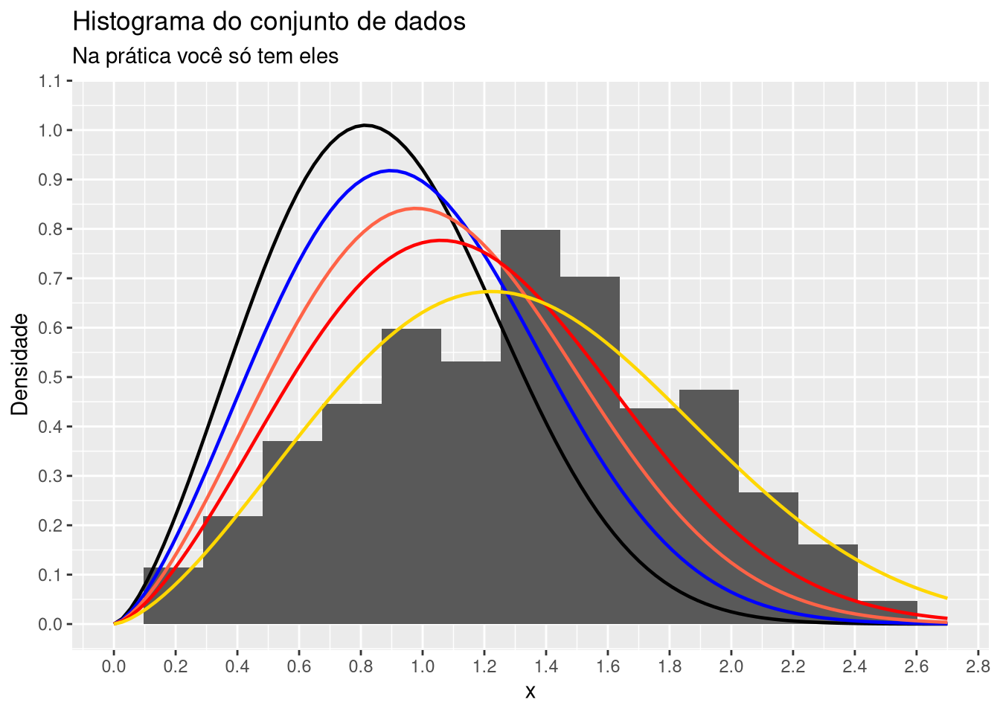

Estimação por máxima verossimilhaça em R, Julia e Python
news
code
R
Python
Julia
Author
Prof. Pedro Rafael D. Marinho
Published
September 9, 2022
Uma breve introdução
Ciência de dados é, sem dúvidas, um área de pesquisa que permeia diversas outras ciências, estando mais intimamente relacionada com as áreas de estatística e a computação.
Eu coscumo dizer aos meus alunos que um ótimo cientista de dados é o profissional que sabe mais estatística que um bom cientista da computação e mais computação de que um bom estatístico.
Também é importante dizer, antes de irmos ao tópico desse post, que é possível fazer ciência de dados em qualquer linguagem de programação que você domine. Claro, isso não implica que a produção de ciência de dados é igualmente fácil em qualquer linguagem que você escolha.
Dicas de linguagens
Se você me permitir te dar uma dica de qual linguagem de programação escolher, sem citar nomes, eu pediria para que você se aproximasse das linguagens que a comunidade que faz ciência de dados estão utilizando.
Porém, se mesmo assim você quiser insistir na pergunta, me tirando da região de conforto de neutralidade, eu citaria três linguagens para você escolher:
Se você está estudando algumas dessas linguagens ou domina ao menos uma delas, certamente você estará traçando um caminho congruente e terá a sua disposição um arsenal de ferramentas prontas para trabalhar com ciência de dados.
Cada cientista de dados, por óbvio, tem sua história pessoal e é comum trilharem caminhos diferentes na programação. Não se faz ciência de dados sem programação!
No meu caso, programo em R a muito mais tempo que em Julia e Python, algo acima de uma década. A linguagem Julia, tive o primeiro contato em 2012, quando surgiu a linguagem, mas somente a partir da pandemia de COVID-19 que comecei a estudar os manuais da linguagem com um pouco mais de seriedade. A linguagem Python venho estudando muito recentemente, porém, já consigo conversar sobre temas como funções variádicas (funções varargs), closures, bibliotecas como NumPy e SciPy, que são pedras angulares para se fazer ciência de dados em Python.
Se você já é fluente em ao menos um linguagem de programação, nos concentraremos nessas três citadas acima, então perceberá que dominar uma outra linguagem é muito mais rápido. São poucas semanas para que você já consiga produzir códigos com boas práticas de programação, coisa que foi muito mais árduo no aprendizado da primeira linguagem. Claro, vez ou outra você se pegará olhando com constância os manuais dessa(s) nova(s) linguagem(ens), pois a sintaxe é nova para você e eventualmente se misturará com a sintaxe das linguagens que você já programa.
Um dos problemas corriqueiros para quem trabalha com ciência de dados e, em particular, com inferência estatística é a obtenção dos Estimadores de Máxima Verossimilhança - EMV. Quando estamos utilizando frameworks de machine learning, muitas vezes essas estimações ocorrem por baixo do pano. Há diversas situações em que estimadores com boas propriedades estatísticas precisam ser utilizados, e os EMV são, de longe, os mais utilizados.
Na área de machine learning, por exemplo, se o que está sendo otimizado por “baixo dos panos” não é uma função de log-verossimilhança, existirá alguma função objetivo que percisa ser maximizada ou minimizada, utilizando métodos de otimizações globais; métodos de Newton e quasi-Newton, os mesmos que utilizaremos para obenção das estimativas obtidas pelos EMV, aqui nessa postagem. Seguindo com outro exemplo, na área de redes neurais alimentadas para frente (feedforward) aplicadas à problemas de regressão ou classificação, existe uma função objetivo que levará em consideração os pesos sinápticos da arquitetura da rede com \(n\) conexões, isto é, existirá uma função \(f(y, w_1, w_2, \cdots)\), em função dos pesos sinápiticos \(w_i, i = 1, ..., n\) e da saida esperada. Como \(y\) é conhecido (saída esperada da rede), para que a rede esteja bem ajustada, será preciso encontar um conjunto ótimo de valores \(w_i\) que minimize essa função. Isso é feito pelo algoritmo backpropagation que também faz uso de métodos de otimização não-linear para encontrar o mínimo global da função objetivo.
Em algum momento você tem que saber otimizar funções
Em fim, você em algum momento, no seu percurso na área de ciência de dados, irá ter que otimizar funções. Quando digo otimizar, em geral, me refiro a maximizar ou minimizar uma função objetivo. Minimizar ⬇️ ou maximizar ⬆️ dependerá da natureza do problema.
Você, como um cientista de dados que é ou que almeja ser é que deverá saber se o que precisa é maximizar ou minimizar. Sobretudo, você que precisará saber qual função deverá otimizar! Isso vai além da programação. Portanto, procure sempre entender o problema e conhecer os detalhes das metodologias que deseja utilizar. ✌️
Funções objetivos irão sempre aparecer na sua vida! 😅
Estimadores de máxima verossimilhança - EMV
Para que não fiquemos apenas olhado códigos de programação em três linguagens distintas (R, Julia e Python), irei contextualizar um simples problema: o problema de encontrar o máximo da função de verossimilhança. Serei muito breve. 🎉
A maior barreira 🧱 de uma implementação consistente!
A grande barreira que limita a nossa implementação, quando já dominamos ao menos uma linguagem de programação é não saber ao certo o que desejamos implementar.
É por isso que irei contextualizar, de forma breve, um comum na estatística e ciência de dados que é o problema de otimizar uma função objetivo, mais precisamente, obter o máximo da função de verossimilhança.
Para simplificar a teoria, irei considerar algumas premissas:
Você tem algum conhecimento de probabilidade;
Considerarei o caso univariado, em que teremos uma única variável aleatória - v.a. que denotarei por \(X\);
A variável aleatória - v.a. \(X\) é contínua, portanto suas observações podem ser modeladas por uma função densidade de probabilidade - fdp\(f\), tal que \(f_X(x) \geq 0\) e \(\int_{-\infty}^{+\infty}f_X(x)\, \mathrm{d}x = 1\).
Na prática, o problema consiste em, através de um conjunto de dados, fixarmos uma fdp \(f_X\). Daí, desejamos encontrar os parâmetros de fdp que faz com que \(f_X\) melhor se ajuste aos dados. Os parâmetros \(\alpha\) e \(\beta\) que fará com que \(f_X\) melhor se ajuste aos dados poderão ser obtidos maximizando a função de verossimilhança \(\mathcal{L}\) de \(f_X\), em relação a \(\alpha\) e \(\beta\), definida por:
\[
\mathcal{L}(x, \alpha,\beta) = \prod_{i = 1}^n f_{X_i}(x, \alpha, \beta).
\tag{1}\] Para simplificar as coisas, como \(\log(\cdot)\) é uma função monótona, então, os valores de \(\alpha\) e \(\beta\) que maximizam \(\mathcal{L}\) serão os mesmos que maximizam \(\log(\mathcal{L})\), ou seja, poderemos nos concentrar em maximizar:
Suponha que \(X \sim Weibull(\alpha = 2.5, \beta = 1.5)\), ou seja, que os dados que chegam a sua mesa são provenientes de uma v.a. \(X\) que tem observações que segue a distribuição \(Weibull(\alpha = 2.5, \beta = 1.5)\). Essa será nossa distribuição verdadeira!
Na prática, você apenas conhecerá os dados! Será você, como cientista de dados, que irá supor alguma família de distribuições para modelar os dados em questão. 🥴
Vamos supor que você, acertivamente, escolhe a famíla Weibull de distribuições para modelar o seu conjunto de dados (você fará isso olhando o comportamento dos dados, por exemplo, fazendo um histograma).
Quer ver o código do gráfico? Clique aqui!
library(ggplot2)# Quantidade de elementosn <- 550L# Parâmetro de formaalpha <-2.5# Parâmetro de escalabeta <-1.5# Fixando uma semente, de forma a sempre obtermos a mesma amostraset.seed(0)dados <-data.frame(x =seq(0, 2, length.out = n),y_rand =rweibull(n, shape = alpha, scale = beta) )dados |>ggplot() +geom_histogram(aes(x = y_rand, y = ..density..), bins =15) +ggtitle(label ="Histograma do conjunto de dados",subtitle ="Na prática você só tem eles" ) +labs(y ="Densidade",x ="x" ) +scale_x_continuous(limits =c(0, 2.7),n.breaks =15 ) +scale_y_continuous(limits =c(0, 1.05),n.breaks =15 ) +geom_function(fun = dweibull,args =list(shape = alpha, scale =1),size =0.8 ) +geom_function(fun = dweibull,args =list(shape = alpha, scale =1.1),color ="blue",size =0.8 ) +geom_function(fun = dweibull,args =list(shape = alpha, scale =1.2),color ="tomato",size =0.8 ) +geom_function(fun = dweibull,args =list(shape = alpha, scale =1.3),color ="red",size =0.8 ) +geom_function(fun = dweibull,args =list(shape = alpha, scale = beta),color ="gold",size =0.8 )

Note que todas as funções densidades de probabilidas - fdps plotadas no histograma aprensentado no gráfico acima são densidades da família Weibull de distribuições. O que difere uma da outra são os valores de \(\alpha\) e \(\beta\), respectivamente. Não basta escolher uma família de distribuições adequadade. Precisamos escolher (estimar) adequadade os parâmetros que indexam a distribuição, sendo o método de máxima verossimilhança, a metodologia estatística que nos ajudam a fazer uma ótima escolha, conduzindo as estimativas que são provenientes de estimadores com boas propriedades estatísticas.
Lembre-se, para obter essas estimativas, temos que maximizar a Equation 1, ou equivalentemente a Equation 2.
No gráfico acima, é possivel visualmente perceber que a curva em amarelo é a que melhor aproxima o comportamento dos dados. De fato, essa é a curva da distribuição verdadeira, i.e., é a curva da fdp de \(X \sim Weibull(\alpha = 2.5, \beta = 1.5)\). Por sinal, ainda não coloquei a equação da fdp de \(X\). Segue logo abaixo:
\[f_X(x) = (\alpha/\beta)(x/\beta)^{\alpha - 1}\exp[{-(x/\beta)^\alpha}],\] com \(x\), \(\alpha\) e \(\beta > 0\).
Implementações
Agora que já conhecemos \(f_X\) e \(\ell(\cdot)\) (“função objetivo”), poderemos colocar as “mãos na massa” no teclado.
E os dados?
Os dados serão gerados aleatoriamente, em cada uma das linguagem (R, Julia e Python). Sendo assim, muito provavelmente não serão os mesmos dados, em cada linguagem, pois a sequência gerada que corresponderá aos nossos dados dependerá da implementação dos geradores de números pseudo-aleatórios de cada linguagem. Porém, os resultados das estimativas devem convergir para valores próximos a \(\alpha = 2.5\) e \(\beta = 1.5\), nas três linguagens.
Irei colocar comentários nos códigos para que você possa estudar cada um deles.
Antes irei colocar uma observação para a linguagem Python. As pedras angulares para computação científica em Python são as bibliotecas NumPy e Scipy. Por que elas são úteis?
Numpy: é uma biblioteca de código aberto iniciada em 2005 e que possui diversos métodos (funções) numéricas comumente utilizadas na computação científica. Há diversos métodos para operar sobre arrays, vetorização, geraçãom de números pseudo atelatórios, entre outras coisas. Consulte mais detalhes em https://numpy.org/doc/stable;
Scipy: tarta-se de uma outra biblioteca importante que contém implementações de métodos de algoritmos fundamentais para computação científica, como métodos de integramação, interpolação, otimização, entre diversas outras metodologias. Consulte outros detalhes em https://scipy.org.
Iremos utilizar ambas as bibliotecas. Basicamente a Numpy será utilizada para vetorização de código, trabalhar com arrays e gerar observações da distribuição Weibull. Nesse último ponto, especificiamente, a biblioteca Numpy implementa a função que gera observações de uma distribuição weibull, onde a distribuição Weibull só tem um parâmetro. Consulte detalhes em https://numpy.org/doc/stable/reference/random/generated/numpy.random.weibull.html.
No link você verá que o que é implementado pelo método random.weibull é gerar observações de \(X = [-\log(U)]^{1/\alpha} \sim Weibull(\alpha)\), com \(U\) sendo um v.a. uniforme no intervalo (0,1] . Daí, para gerar observações da distribuição \(Weibull(\alpha, \beta)\), teremos que multiplicar o resultado de random.weibull pelo valor de \(\beta\). Porém, com pouco código, podemos construir uma função para gerar observações da \(Weibull(\alpha, \beta)\).
Eu olhando param um pouco de malabarismo de código (desnecessário) em Python.
Isso é um pouco estranho, mas tudo bem, sabemos programar!
Ter que multiplicar as observações geradas de uma distribuição que deveria ter, em sua definição, dois parâmetros me parece estranho! Perceba que no código de Python foi preciso fazer definir a função random_weibull, em que foi preciso considerar beta * np.random.weibull(alpha, n) para se ter observações Weibull com valores de \(\beta\) diferente de 1. É fácil adaptar, mais o designer não é legal, na minha opinião.
Afinal de contas, é muito mais conveniente alterar o comportamento e resultados de uma função passando argumentos para a função, e não fazendo as alterações fora dela. É esse o papel dos argumentos, não? Se o usuário tivesse interesse que \(\beta = 1\), como ocorre em random.weibull ele poderia especificar isso como argumento da função, certo?
Comportamentos mais convenientes são observados em R e Julia, afinal de contas, elas surgiram com o foco na computação científica. R é mais voltada para ciência de dados e aprendizagem de máquina. Já Julia, além dos mesmos focos de R, também é uma linguagem de proprósito geral, assim como Python é em sua essência.
Note que essa minha crítica não é a linguagem Python. Refere-se tão somente ao método random.weibull e alguns outros que seguem esse designer de implementação. Python é uma ótima linguagem que vem melhorando o seu desempenho nas novas versões. Veja as novidades de lançamento do Python 3.11, que alcançou melhorias no desempenho computacional entre 10-60% quando comparado com Python 3.10. Algo em torno de 1.25x de aumento no desempenho, considerando o conjunto de benchmarks padrão que o comitê de desenvolvimento da linguagem utiliza.
Agora sim, vamos aos três códigos completos para a solução do problema que motiva o título desse post.
Nas três linguagens, utilizarei os mesmo conceitos importantes de implementação que conduzem a códigos mais generalizados e a um melhor reaproveitamente de código:
Note que utilizo o conceito de funções com argumentos variádicos, também chamadas de funções varargs. Perceba que a função log_likelihood não precisa ser reimplementada novamente para outras funções densidades. A função densidade de probabilidade é um argumento dessa função que denominei de log_likelihood nos três códigos (R, Python e Julia). Precisamos de operadores varargs, tendo em vista que não conhecemos o número de parâmetros da fdp que o usuário irá passar como argumento. Funções com argumentos varargs é uma técnica muito poderosa. Utilizei esses conceitos em Python e Julia, tendo em vista que não se faz necessário para a função optim em R. ⚡
Note que não é preciso obter analiticamente a expressão da função de log-verossimilhança. Não há sentido nisso, tendo em vista que o nosso objetivo é simplesmente obter as estimativas numéricas para \(\alpha\) e \(\beta\) . É muito mais útil ter uma função genérica que se adeque a diversas outras situações!
Outro conceito poderoso e que te leva a implementações consistentes é entender o funcionamento das funções anônimas, também conhecida como funções lambda**.
Foi utilizado como método de otimização (minimização), o método BFGS. Escrevi a respeito dos métodos de quasi-Newton, classe de algoritmos que o método de Broyden–Fletcher–Goldfarb–Shanno - BFGS pertencem, nos materiais que diponibilizo aos meus alunos na discipina de estatística computacional que leciono no Departamento de Estatística da UFPB. Se quiser um pouco mais de detalhes, clique aqui.
Minimizar ou maximizar?
Alguns algoritmos de otimização são definidos para minimizar uma função objetivo, como é o caso da maioria das implementações dos métodos de busca global, onde se encaixa o método BFGS. Mas não tem problema, uma vez que minimizar, \(-f\) equivale a maximizar \(f\), em que \(f\) é uma dada função objetivo.
# Quantidade de observaçõesn <- 250L# Parâmetros que especificam a distribuição verdadeira, i.e., distribuição# da variável aleatória cujo os dados são observações.alpha <-2.5beta <-1.5# Fixando uma semente para o gerador de números pseudo-aleatórios.# Assim, conseguimos, toda vez que rodamos o código, reproduzir # os mesmos dados.set.seed(3)# Gerando as observações. Esse será o conjunto de dados que você tera para # modelar.dados <-rweibull(n = n, shape = alpha, scale = beta)pdf_weibull <-function(x, par){ alpha <- par[1] beta <- par[2] alpha/beta * (x/beta)^(alpha-1) *exp(-(x/beta)^alpha)}# Checando se a densidade de pdf_weibull integra em 1integrate(f = pdf_weibull, lower =0, upper =Inf, par =c(2.5, 1.5))
1 with absolute error < 6e-06
# Em R, o operador dot-dot-dot (...) é utilizado para definir# quantidade variádica de argumentos. Assim, log_likelihood é# uma função vararg.log_likelihood <-function(x, pdf, par)-sum(log(pdf(x, par)))result <-optim(fn = log_likelihood,par =c(0.5, 0.5),method ="BFGS",x = dados,pdf = pdf_weibull)# Imprimindo os valores das estimativas de máxima verossimilhançacat("Valores estimados de alpha e beta\n")
Valores estimados de alpha e beta
cat("--> alpha: ", result$par[1], "\n")
--> alpha: 2.86476
cat("--> beta: ", result$par[2], "\n")
--> beta: 1.503992
import numpy as npimport scipy.stats as statimport scipy.integrate as inteimport scipy.optimize as opt# Valores da distribuição verdadeiraalpha =2.5beta =1.5# Número de observações que irão compor nossos dadosn =250# Implementando a função random_weibull, em que os parâmetros# que indexam a distribuição são argumentos da função. Tem mais# sentido ser assim, não?def random_weibull(n, alpha, beta):return beta * np.random.weibull(alpha,n)# Escrevendo a funçãp densidade de probabilidade da Weibull# na reparametrização correta.def pdf_weibull(x, param): alpha = param[0] beta = param[1]return alpha/beta * (x/beta)**(alpha-1) * np.exp(-(x/beta)**alpha)# Testando se a densidade integra em 1round(inte.quad(lambda x, alpha, beta: pdf_weibull(x, param = [alpha, beta]),0, np.inf, args = (1,1))[0],2)# Implementando uma função genérica que implementa a função objetivo# (função de log-verossimilhança) que iremos maximizar. Essa função # irá receber como argumento uma função densidade de probabilidade.# Não é preciso destrinchar (obter de forma exata) a função de # log-verossimilhança!# A função de log-verossimilhança encontra-se multiplicada por -1# devido ao fato da função que iremos fazer otimização minimizar # uma função função objetivo. Minimizar -f equivale a maximizar f.# Lembre-se disso!
1.0
def log_likelihood(x, pdf, *args):return-np.sum(np.log(pdf(np.array(x), *args)))# Gerando um conjunto de dados com alpha = 2.5 e beta = 1.5. Essa # é nossa distribuição verdadeira, i.e., é a distribuição que gera# que gerou os dados que desejamos ajustar.# Precisamos fixar uma semente, uma vez que queremos os mesmos dados# toda vez que rodamos esse código. np.random.seed(0)dados = random_weibull(n = n, alpha = alpha, beta = beta)# Miminimizando a função -1 * log_likelihood, i.e., maximizando# a função log_likelihood.alpha, beta = np.round(opt.minimize( fun =lambda*args: log_likelihood(dados, pdf_weibull, *args), x0=[0.5, 0.5]).x, 2)# Imprimindo os valores das estimativas de máxima verossimilhançaprint("Valores estimados de alpha e beta\n")